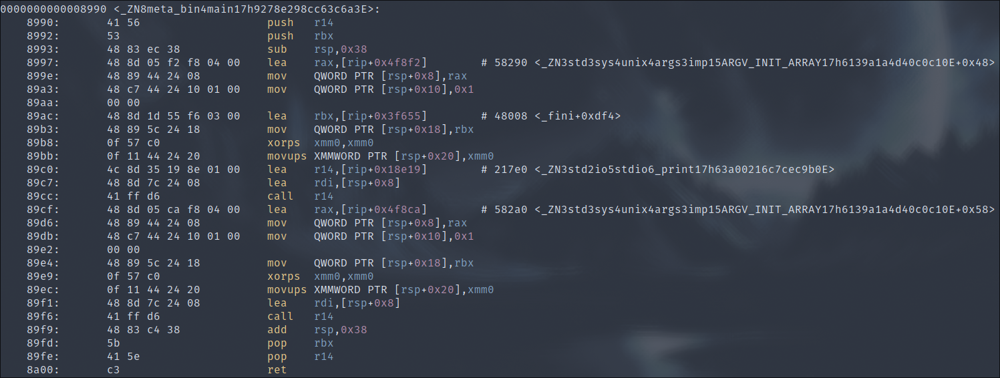
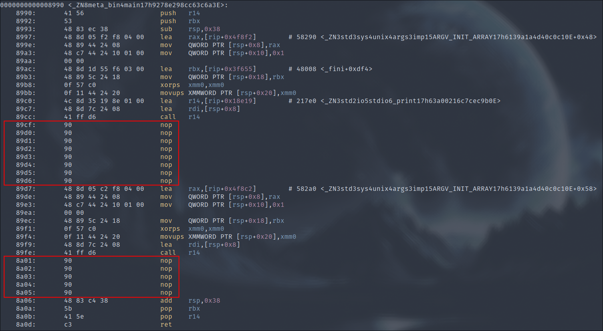

The metamorphic malware technique, similar to polymorphism, consists of a binary that constantly changes its entire code structure, while obviously retaining the same functionality.
To compare with polymorphism, if we take the image of a tiger that changes the position of its stripes, we can say that metamorphism is a tiger that becomes a lion. This technique is therefore much more effective at evading antivirus detection.
In concrete terms, metamorphism means altering the program's assembly instructions in a different way each time the binary is compiled, while achieving the same thing in the end.
For our example of metamorphism implementation, we're going to take advantage of the capabilities of Rust and its compiler, to develop a "macro" that will be applied to our functions to insert between each code instruction, a random number, between 1 and 10, of "nop" opcodes (an assembler instruction that performs no action").
A macro in Rust is similar to a macro in C: it's "code" executed during pre-compilation to reformat the code before it's compiled. In our case, we're going to develop what Rust calls a "procedural" macro, which is different from the "declarative" macros you may have seen with macro_rules!() and which we won't be looking at here.
To do this, we'll need to create two projects, one to develop the macro in a separate library, and one to demonstrate the use of the macro:
meta_bin/
├── Cargo.lock
├── Cargo.toml
└── src
└── main.rs
meta_lib/
├── Cargo.lock
├── Cargo.toml
└── src
└── lib.rs
We'll start with the macro code, first with this configuration in the "Cargo.toml" file:
# meta_lib/Cargo.toml
...
[lib]
proc-macro = true
[dependencies]
syn = {version = "2.0.45", features = ["full"]}
quote = "1.0.34"
proc-macro2 = "1.0.73"
rand = "0.8"
The syn, quote and proc-macro2 dependencies are required to write a procedural macro, and rand to implement random functionality.
Then the macro source code:
# meta_lib/src/lib.rs
use proc_macro::TokenStream;
use quote::quote;
use rand::Rng;
use syn::{parse_macro_input, ItemFn};
#[proc_macro_attribute]
pub fn nopper(_: TokenStream, input: TokenStream) -> TokenStream {
let input = parse_macro_input!(input as ItemFn);
let fn_name = &input.sig.ident;
let block = &input.block;
let mut modified_statements = quote! {};
for stmt in &block.stmts {
let num = rand::thread_rng().gen_range(1..10);
let mut nops = quote! {};
for _ in 0..=num {
nops = quote! {
#nops
core::arch::asm!("nop");
}
}
modified_statements = quote! {
#modified_statements
#stmt
unsafe {
#nops
};
};
}
quote! {
fn #fn_name() {
#modified_statements
}
}
.into()
}
Our nopper function is defined as an attribute macro via proc_macro_attribute. It takes as argument input, which corresponds to the content of our function.
We will then iterate over each statement of our function (called stmt for statement), for which we will :
retrieve a random number from 1 and 10 For this number of times, instantiate the "core::arch::asm!('nop');" instruction, which will write our opcode. Then, we rewrite the function with our modified instructions.
We'll now move on to the code that will use our macro:
# meta_bin/src/main.rs
use meta_lib::nopper;
#[nopper]
fn main() {
println!("Print1");
println!("Print2");
}
And now our main function will contain a nop opcode between each println, so there should be two blocks.
To demonstrate the difference with and without our macro, here are the assembly instructions:
Without :

with :

We're back to our two "nop" blocks.
This implementation of metamorphism is rather basic, but provides you with a solid foundation for macro development in Rust.
It's up to you to use your creativity to push this technique further.